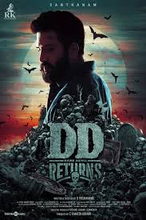

SPOTSTAR - COMEDY

COMEDY
Tamil comedy movies are widely loved for their witty dialogues, humorous situations, and entertaining characters. They often reflect everyday life, making audiences laugh through relatable and clever storytelling. Comedy has been a strong pillar in Tamil cinema, with legendary actors like Goundamani, Vadivelu, and Vivek contributing unforgettable performances. Modern films blend humor with other genres like romance or action, offering a complete entertainment package. Movies like Boss Engira Bhaskaran, Kalakalappu, and Nanban are known for their laugh-out-loud moments. Tamil comedy continues to evolve, appealing to both family audiences and younger viewers alike.
POPULAR FILMS


